01
Le soufflage
La canne, le four, le souffle. Les verres filigranes sont montés à la façon vénitienne.
Pièces uniques et petites séries, nées sans moule — la matière décide d'une partie de la forme.
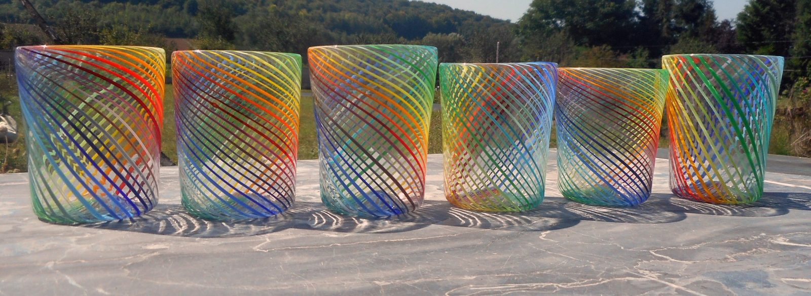
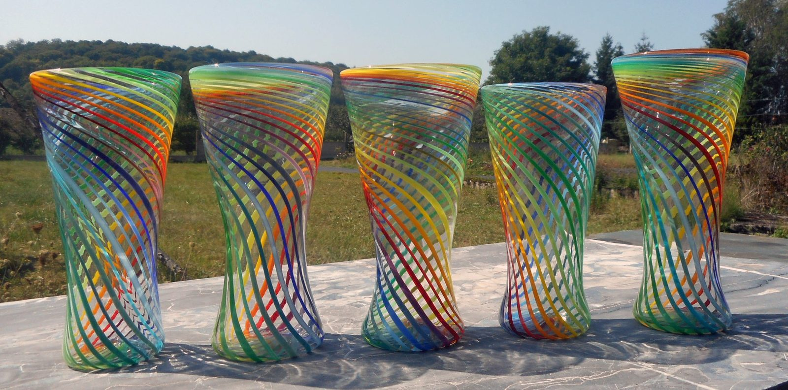
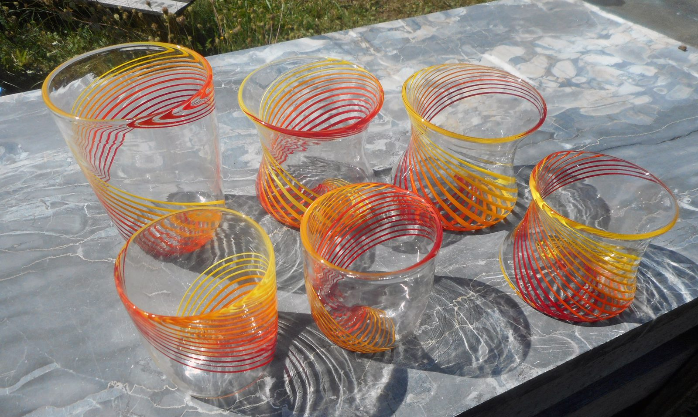
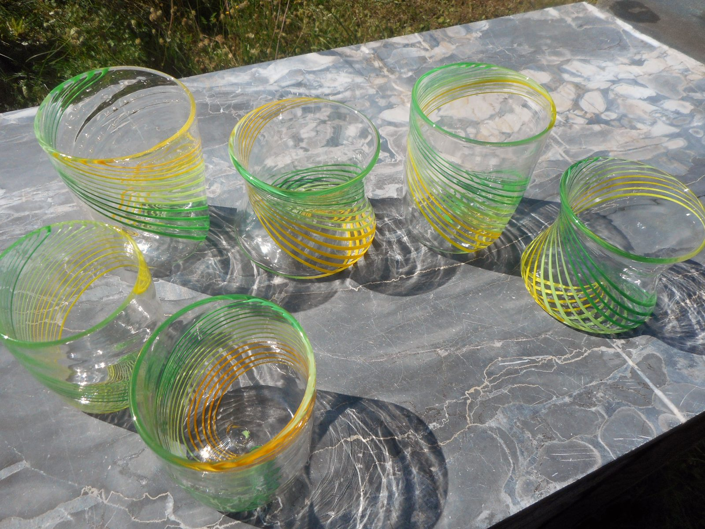
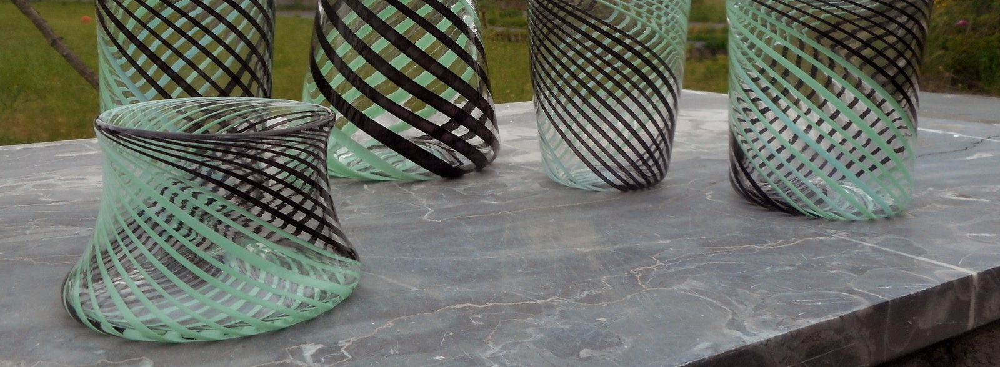
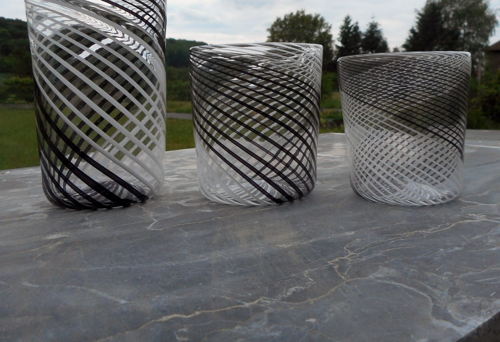
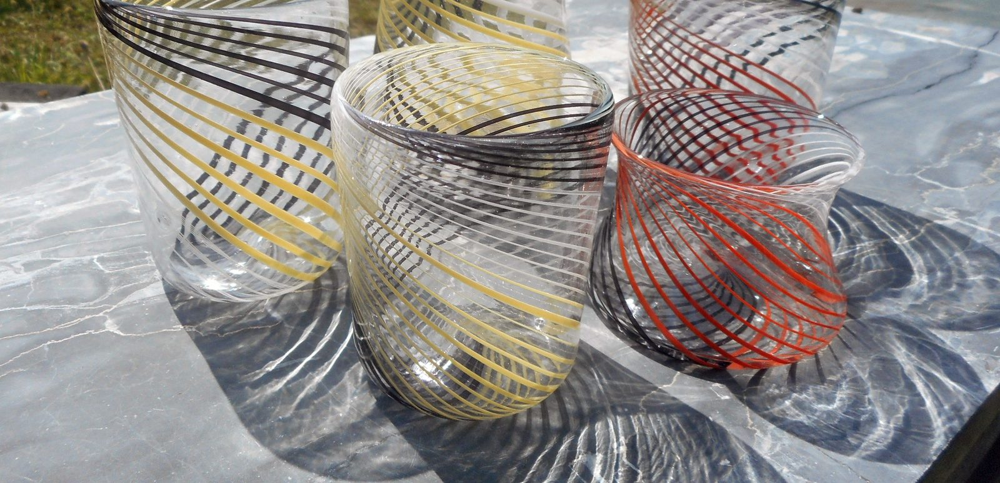
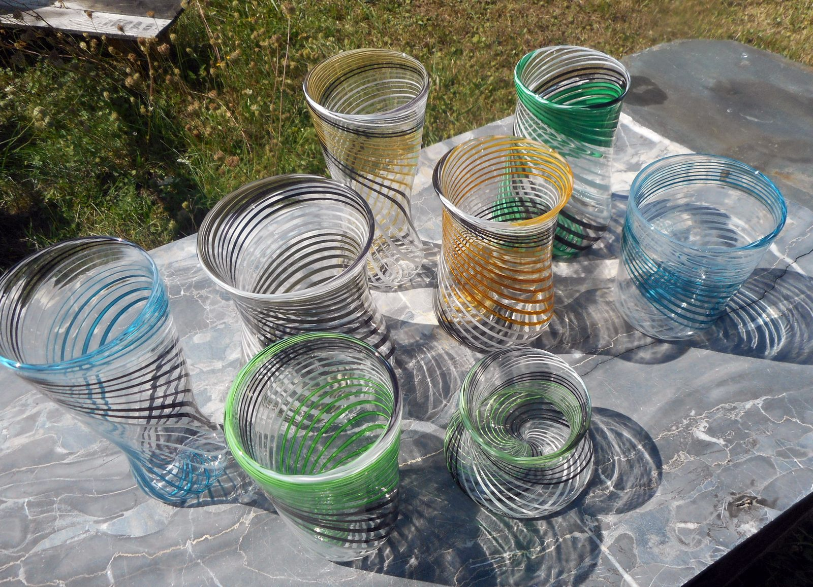
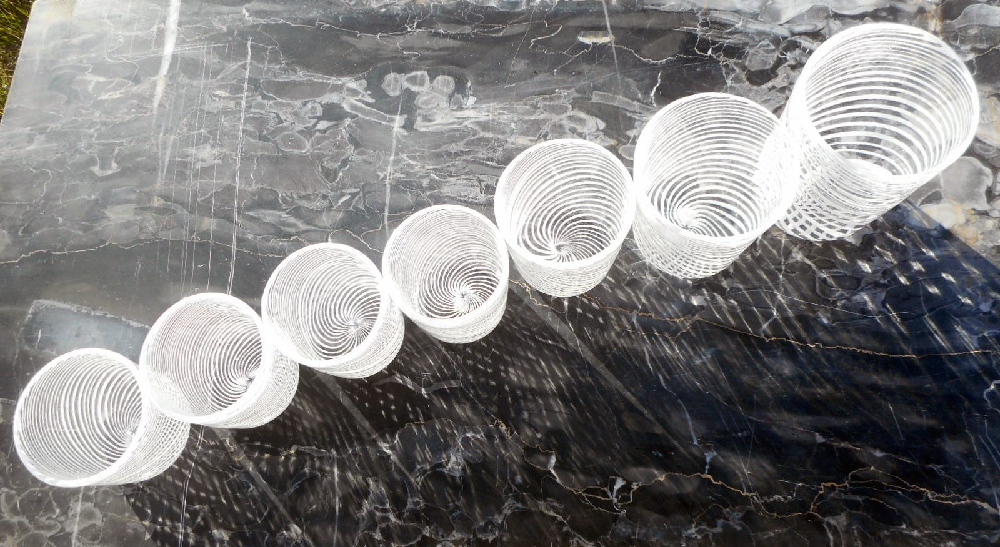
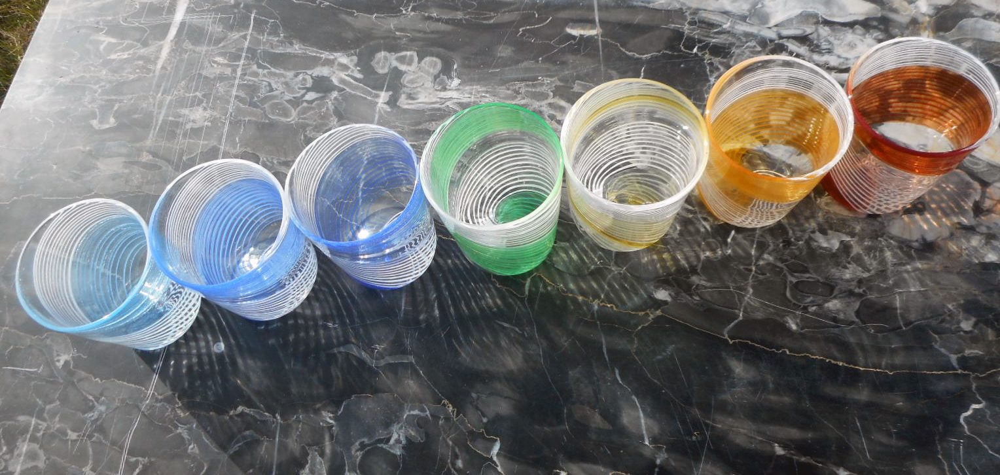
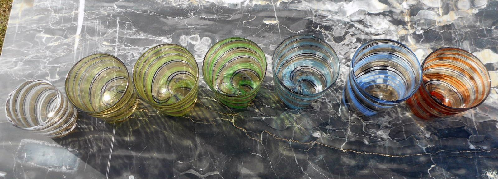
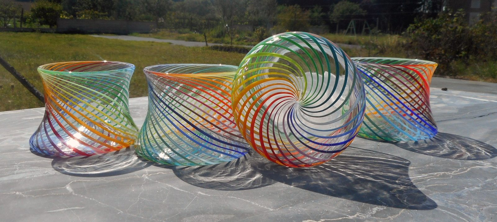
La canne, le four, le souffle. Les verres filigranes sont montés à la façon vénitienne.
Le verre fondu dans un moule réfractaire. Crânes, sulfures, volumes opaques et translucides.
Le travail à la flamme, au plus près. Bijoux et pièces de petit format.
Le four tourne, les pièces se font sous vos yeux. Démonstration sur rendez-vous.
Jusqu'à dix-huit couleurs torsadées dans la paroi d'un même verre. Douze modèles, trois formes, et autant de combinaisons que de commandes.
« Chacun des verres est unique, et ils sont soufflés à la façon vénitienne. De nombreuses combinaisons de couleurs sont possibles. » Pierrot Dorémus
Le modèle arc-en-ciel compte de quinze à dix-huit couleurs. La flûte, d'une contenance d'environ 30 cl, en compte de dix à quinze.
« Les possibilités du verre me permettent de travailler sur tous les thèmes que je souhaite — c'est ce qu'il y a de plus enrichissant. »
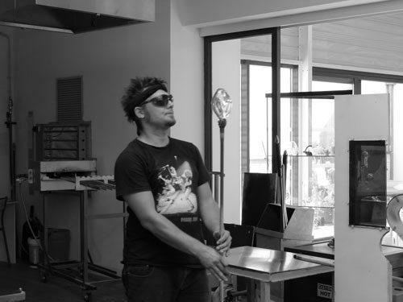
Vrai passionné du métier de verrier, j'ai sillonné la France pour enrichir ma créativité à travers de multiples expériences, afin de pouvoir créer tout ce que je désire à travers ce matériau riche, qui nourrit mon esprit.
À travers les différentes techniques verrières que sont le soufflage, la pâte de verre et la perle de verre au chalumeau, je façonne des objets lumineux et esthétiques. Installé à Gramat, dans le Lot, je vous propose de venir me rendre visite.
On y voit le four, la canne et les pièces en cours — et toute la collection de verres filigranes est disponible sur place.
Démonstration de soufflage possible sur rendez-vous. Pour les groupes, merci de prévenir à l'avance.
Gabarit de carte. Sur le site livré : carte interactive, itinéraire en un clic depuis le téléphone.
Commande sur mesure, combinaison de couleurs particulière, pièce pour un professionnel : écrivez-moi ou appelez l'atelier.